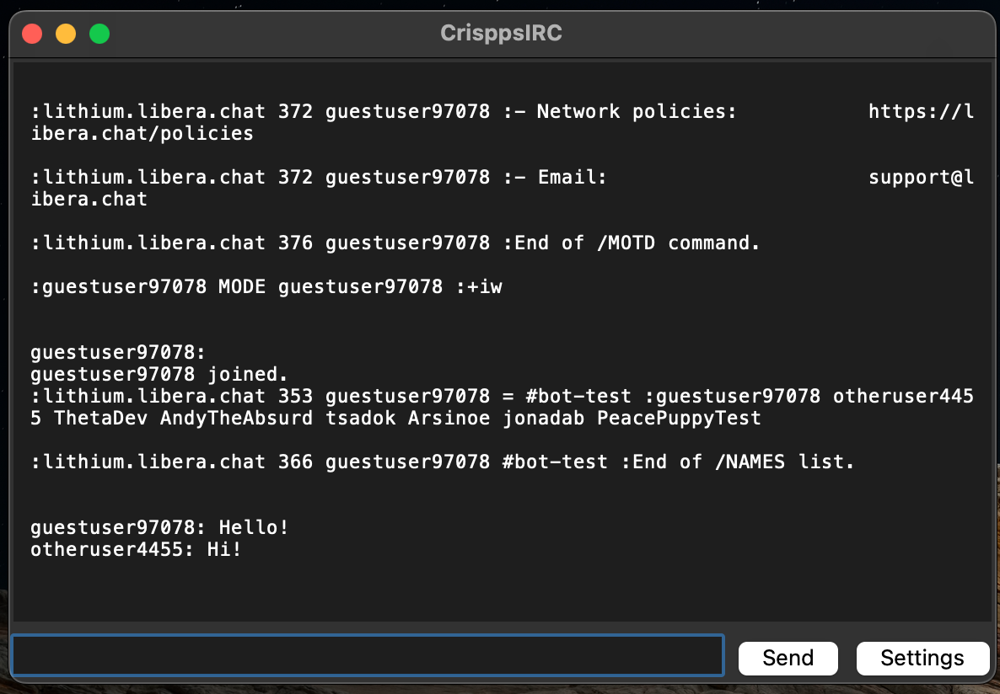
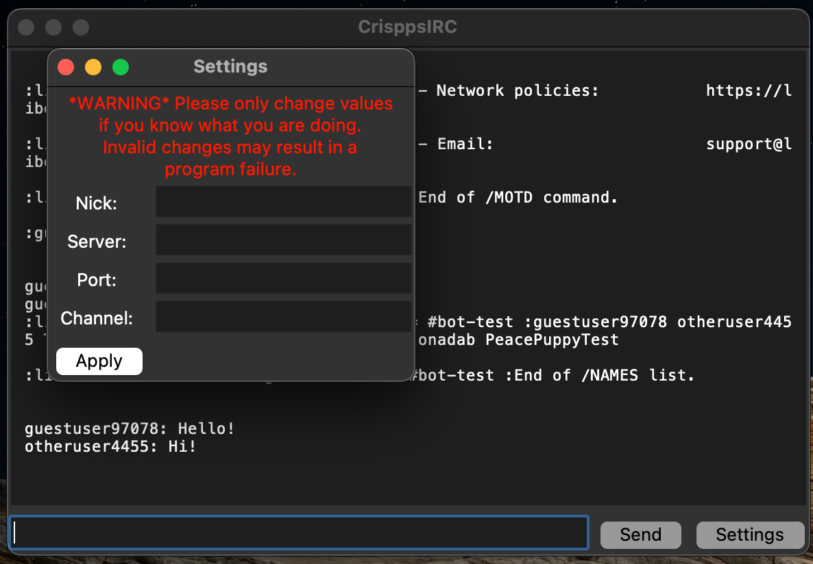

CrisppsIRC

CrisspsIRC is a simple, lightweight IRC client created as a personal project to connect to a friend’s IRC server. It utilizes Python’s socket networking interface to connect to IRC servers and send and receive messages. The settins interface allows users to dynamically reconnect to different IRC servers and channels without closing the application. CrisppsIRC also makes use of Python’s built-in threading functionality to run UI updates and background chat updates simultaneously.
Screenshots:


Source: henmel1/CrisppsIRC